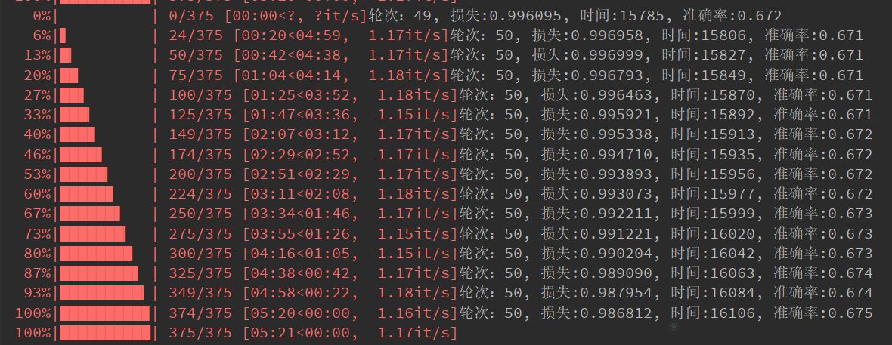
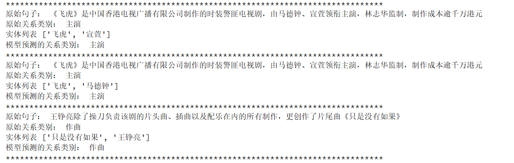

3.4 BiLSTM+Attention模型的搭建与训练
BiLSTM+Attention关系抽取模型搭建¶
学习目标¶
- 掌握基于 BiLSTM+Attention 模型搭建的代码实现.
- 掌握模型的训练代码实现.
- 掌握使用模型预测代码的实现.
BiLSTM+Attention模型搭建¶
- 本项目中BiLSTN+Attention模型搭建的步骤如下:
- 第一步: 编写模型类的代码
- 第二步: 编写训练函数
- 第三步: 编写使用模型预测代码的实现.
第一步: 编写模型类的代码¶
- 构建BiLSTM_ATT模型类
- 代码路径: /home/ec2-user/Bilstm_Attention_RE/model/bilstm_atten.py
# coding:utf8
import torch
import torch.nn as nn
import torch.nn.functional as F
class BiLSTM_ATT(nn.Module):
def __init__(self, conf, vocab_size, pos_size, tag_size):
super(BiLSTM_ATT, self).__init__()
self.batch = conf.batch_size
self.device = conf.device
self.vocab_size = vocab_size
self.embedding_dim = conf.embedding_dim
self.hidden_dim = conf.hidden_dim
self.pos_size = pos_size
self.pos_dim = conf.pos_dim
self.tag_size = tag_size
self.word_embeds = nn.Embedding(self.vocab_size,
self.embedding_dim)
self.pos1_embeds = nn.Embedding(self.pos_size,
self.pos_dim)
self.pos2_embeds = nn.Embedding(self.pos_size,
self.pos_dim)
self.lstm = nn.LSTM(input_size=self.embedding_dim + self.pos_dim * 2,
hidden_size=self.hidden_dim // 2,
num_layers=1,
bidirectional=True)
self.linear = nn.Linear(self.hidden_dim,
self.tag_size)
self.dropout_emb = nn.Dropout(p=0.2)
self.dropout_lstm = nn.Dropout(p=0.2)
self.dropout_att = nn.Dropout(p=0.2)
self.att_weight = nn.Parameter(torch.randn(self.batch,
1,
self.hidden_dim).to(self.device))
def init_hidden_lstm(self):
return (torch.randn(2, self.batch, self.hidden_dim // 2).to(self.device),
torch.randn(2, self.batch, self.hidden_dim // 2).to(self.device))
def attention(self, H):
M = F.tanh(H)
a = F.softmax(torch.bmm(self.att_weight, M), dim=-1)
a = torch.transpose(a, 1, 2)
return torch.bmm(H, a)
def forward(self, sentence, pos1, pos2):
init_hidden = self.init_hidden_lstm()
embeds = torch.cat((self.word_embeds(sentence),
self.pos1_embeds(pos1),
self.pos2_embeds(pos2)), 2)
embeds = self.dropout_emb(embeds)
embeds = torch.transpose(embeds, 0, 1)
lstm_out, lstm_hidden = self.lstm(embeds, init_hidden)
lstm_out = lstm_out.permute(1, 2, 0)
lstm_out = self.dropout_lstm(lstm_out)
att_out = F.tanh(self.attention(lstm_out))
att_out = self.dropout_att(att_out).squeeze()
result = self.linear(att_out)
return result
第二步: 编写训练函数¶
- 实现训练函数train.py
- 代码位置: /home/ec2-user/Bilstm_Attention_RE/train.py
# coding:utf-8
from model.bilstm_atten import *
from utils.data_loader import *
from utils.process import *
import torch
import torch.nn as nn
import torch.optim as optim
import time
from tqdm import tqdm
def train(conf, vocab_size, pos_size, tag_size):
# 加载数据集
train_iter, test_iter = get_loader_data()
print('训练数据集长度', len(train_iter))
# 实例化Bilstm+attention模型
ba_model = BiLSTM_ATT(conf, vocab_size, pos_size, tag_size).to(conf.device)
print(ba_model)
# 实例化优化器
optimizer = optim.Adam(ba_model.parameters(), lr=conf.learning_rate)
# 实例化损失函数
criterion = nn.CrossEntropyLoss()
# 实现模型训练
# 定义训练模型参数
start_time = time.time()
train_loss = 0 # 已经训练样本的损失
train_acc = 0 # 已经训练样本的准确率
total_iter_num = 0 # 训练迭代次数
total_sample = 0 # 已经训练的样本数
# 开始模型的训练
for epoch in range(conf.epochs):
for sentence, pos1, pos2, label, _, _, _ in tqdm(train_iter):
# 将数据输入模型
output = ba_model(sentence, pos1, pos2)
# 计算损失
loss = criterion(output, label)
# 梯度清零
optimizer.zero_grad()
# 反向传播
loss.backward()
# 梯度更新
optimizer.step()
# 计算总损失
total_iter_num += 1
train_loss += loss.item()
# 计算总准确率
train_acc = train_acc + sum(torch.argmax(output, dim=1) == label).item()
total_sample = total_sample + label.size()[0]
# print(f'total_sample--->{total_sample}')
# 每25次训练，打印日志
if total_iter_num % 25 == 0:
tmploss = train_loss / total_iter_num
tmpacc = train_acc / total_sample
end_time = time.time()
print('轮次: %d, 损失:%.6f, 时间:%d, 准确率:%.3f' % (epoch+1, tmploss, end_time-start_time, tmpacc))
if epoch % 10 == 0:
torch.save(ba_model.state_dict(), './save_model/20230228_new_model_%d.bin' % epoch)
if __name__ == '__main__':
word2id, id2word = get_word_id(conf.train_data_path)
vocab_size = len(word2id)
print(vocab_size)
pos_size = 143
tag_size = len(relation2id)
train(conf, vocab_size, pos_size, tag_size)
- 模型训练结果展示:

结论: BiLSTM+Attention模型在训练集上的最终表现是ACC:80%
第三步: 编写模型预测函数¶
- 使用训练好的模型，随机抽取文本进行关系抽取
- 代码位置: /home/ec2-user/Bilstm_Attention_RE/predict.py
# coding:utf-8
from model.bilstm_atten import *
from utils.data_loader import *
from utils.process import *
import torch
from tqdm import tqdm
# 导入配置文件
conf = Config()
# 获取或定义模型参数
word2id, id2word = get_word_id(conf.train_data_path)
vocab_size = len(word2id)
pos_size = 143
tag_size = len(relation2id)
print(tag_size)
# 获取id2relation的映射
id2relation = {int(value): key for key, value in relation2id.items()}
# 加载数据集
_, test_iter = get_loader_data()
# 实例化Bilstm+attention模型
ba_model = BiLSTM_ATT(conf, vocab_size, pos_size, tag_size).to(conf.device)
# 加载模型
ba_model.load_state_dict(torch.load('./save_model/20230228_new_model_40.bin'))
# 开始模型的预测
def model2predict():
ba_model.eval()
with torch.no_grad():
for sentence, pos1, pos2, label, original_sequences, original_labels, entites in tqdm(test_iter):
print(label)
print(original_labels)
print('original_sequences', len(original_sequences))
print('original_labels', len(original_labels))
# 将数据输入模型
output = ba_model(sentence, pos1, pos2)
# 实现模型的预测
predict_ids = torch.argmax(output, dim=1).tolist()
for i in range(len(original_sequences)):
original_sequence = ''.join(original_sequences[i])
original_label = id2relation[original_labels[i]]
entity = entites[i]
predict_label = id2relation[predict_ids[i]]
print('原始句子: ', original_sequence)
print('原始关系类别: ', original_label)
print('实体列表',entity)
print('模型预测的关系类别: ', predict_label)
print('*'*80)
if __name__ == '__main__':
model2predict()
- 预测结果展示:

小节总结¶
- 本小节实现了基于BiLSTM+Attention模型的构建, 并完成了训练和测试评估.